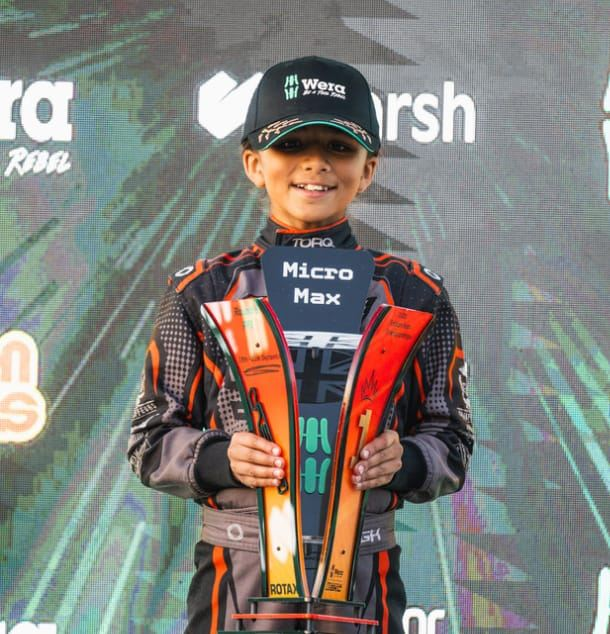
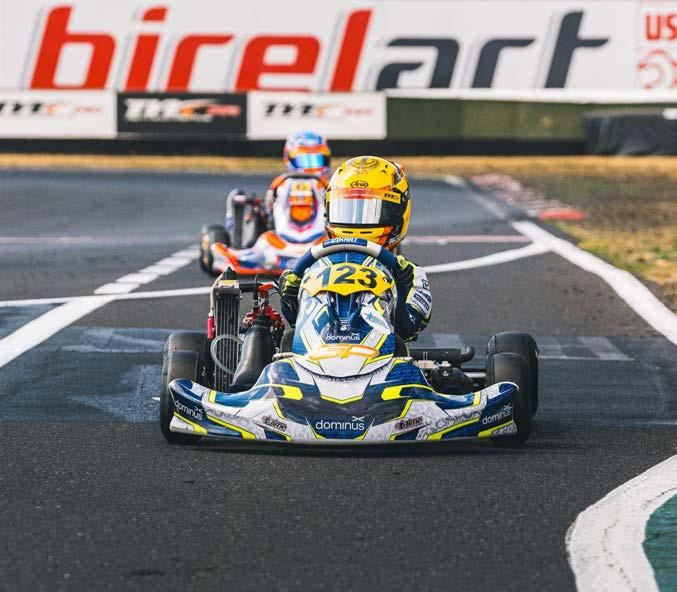

The Driver
Composure. Heritage. Pace.
Dhian Singh Pahal is a British karting champion from Coventry — the first Sikh to win a British national karting championship, and a Team GB driver at the Rotax Grand Finals. This is who he is.

01 — The Story So Far
Racing since he was three.
Dhian has been racing since he was three years old. He took his first laps in Bambino, the entry class of British karting, and progressed through Micro Max — the class he won in 2025 — before stepping up to Mini Max in 2026 as a Team GB driver.
He races out of Whilton Mill with DHR Elite Performance, a team built around his career: engineering, data and telemetry on track; simulator work, fitness and racecraft study off it. Behind him sit his family, his advisor Sukhpal Singh Ahluwalia, and a partner group that has grown with every season.
"I've been racing since I was three years old and my dream is to be a Formula One driver. I'm from Coventry and I hope I'll be the first F1 driver from the city." Dhian — Coventry Observer, Aug 2026
02 — Heritage
He races as himself.
Dhian is Sikh Punjabi and proudly from Coventry — Britain's motor city. He races with the Khanda, the sacred symbol of his faith, on his helmet, and carries a photo of his late grandmother on his kart and his rib protector.
When he won the 2025 British title, he became the first Sikh driver to win the Wera Tools British MicroMax Kart Championship — and weeks later he represented Great Britain at the Rotax Max Challenge Grand Finals in Bahrain.
Representing his country, his community and his city is not a side note to his racing. It is the point of it.

1st
Sikh British karting champion
GB
Team GB — Rotax Grand Finals
1
Khanda on the helmet
Cov
Britain's motor city
03 — The Athlete
Professionalism is the advantage.
Every lap logged
DHR Elite Performance runs the engineering, telemetry and coaching behind each race weekend. Nothing is left to chance — setup, strategy or a single corner entry.
Data-led · EngineeredBuilt like a pro
Simulator sessions, physical training and racecraft study. The week between race weekends is structured like a professional's, not a hobbyist's.
Simulator · Fitness · StudyComposed under lights
Broadcast interviews, sponsor activations and community events are handled with the same discipline as the driving.
BBC · Activations · Community
The Values
What the paddock sees
04 — Team DSP
Built to go all the way.

Strategic AdvisorSukhpal Singh Ahluwalia
Founder of Euro Car Parts and Chairman of Dominus — one of Britain's most respected self-made business leaders, guiding the commercial strategy behind DSP.
Business · Strategy Race Team
Race Team
Team DSP
Kuljit Singh Pahal leads the commercial programme; the family crew runs the kart at every meeting. A team sized to the ambition, not the budget.
Family · Engineers · Crew Club Ambassador
Club Ambassador
Coventry City FC
Dhian was the first recipient of the Sky Blues' 2026/27 away kit, and his championship-winning kart and race suit were displayed in the COV store — beside the TGR Haas F1 Team Race Experience.
Collaboration · Coventry"I'm a product of the motor city, so it only makes sense for me to collaborate with Coventry City." Dhian — Coventry Observer, Aug 2026
Next — Partnership
From Coventry to the grid.
The next chapters of this story are being written now. Write yours into it.